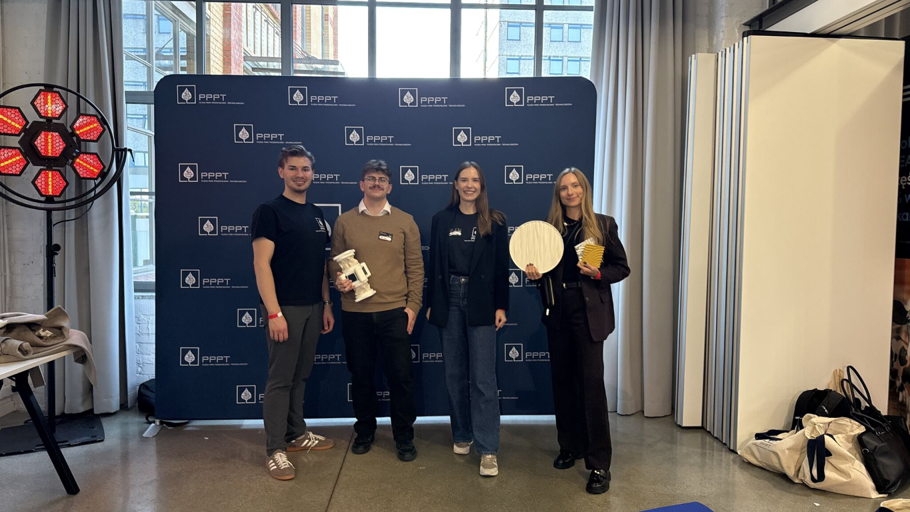

NOVEMBER 2, 2026 · STARTUP COMMUNITY SUMMIT 2026
Gizmo at Startup Community Summit
At Concordia Design in Poznań, the Gizmo team took part as an Accelerator & Innovation Infrastructure Partner. At the Ecosystem Village booth, we talked about the project and collaboration opportunities, and discussed participants' ideas for the future.
Kacper Olszewski from Project Gizmo and Karolina Filak-Mędon from Vanoa Systems took part in the event.